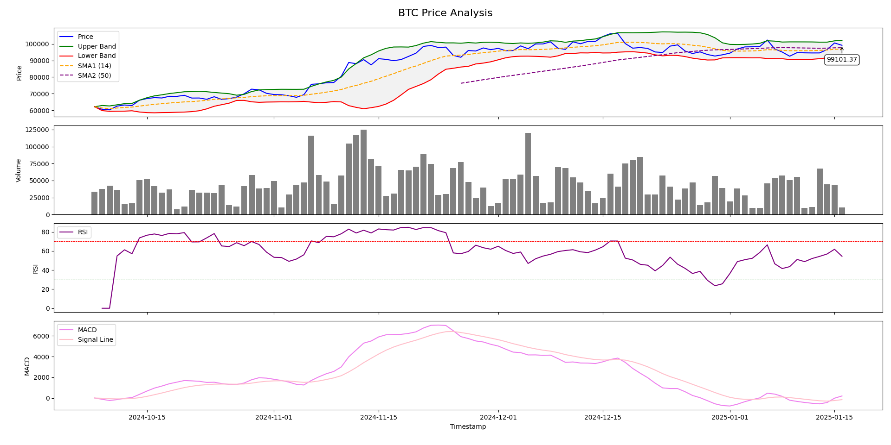

Example Report
Here’s an example of the professional analysis we provide. This chart demonstrates price trends, trading volume, and technical indicators such as RSI and MACD to help you make informed decisions.
Figure: BTC Price Analysis with Bollinger Bands, RSI, and MACD
This example illustrates how we break down cryptocurrency trends to provide actionable insights. For full reports tailored to your needs, explore our Services.